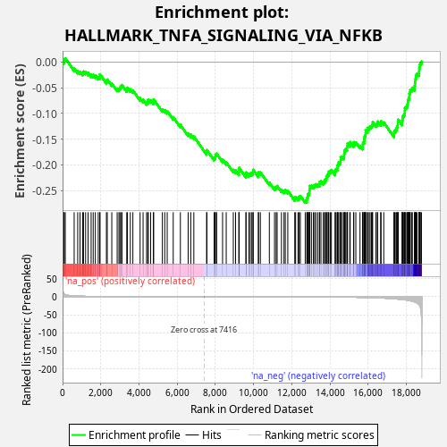
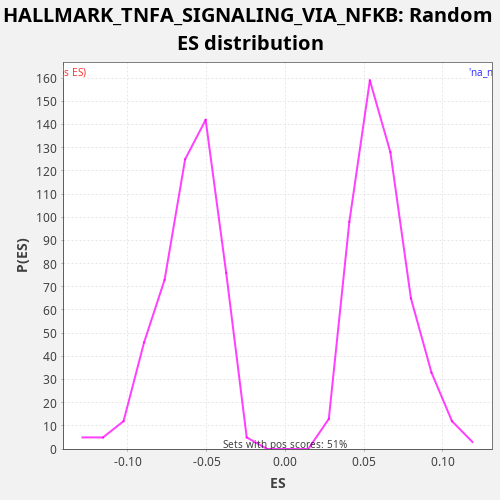

| Dataset | TCGA |
| Phenotype | NoPhenotypeAvailable |
| Upregulated in class | na_neg |
| GeneSet | HALLMARK_TNFA_SIGNALING_VIA_NFKB |
| Enrichment Score (ES) | -0.27410135 |
| Normalized Enrichment Score (NES) | -4.4066906 |
| Nominal p-value | 0.0 |
| FDR q-value | 0.0 |
| FWER p-Value | 0.0 |

| SYMBOL | RANK IN GENE LIST | RANK METRIC SCORE | RUNNING ES | CORE ENRICHMENT | |
|---|---|---|---|---|---|
| 1 | SMAD3 | 68 | 8.536 | 0.0014 | No |
| 2 | VEGFA | 85 | 7.590 | 0.0056 | No |
| 3 | TNFAIP2 | 142 | 5.725 | 0.0076 | No |
| 4 | LAMB3 | 607 | 2.228 | -0.0122 | No |
| 5 | CCND1 | 793 | 1.715 | -0.0171 | No |
| 6 | BCL6 | 913 | 1.500 | -0.0185 | No |
| 7 | ID2 | 1050 | 1.294 | -0.0207 | No |
| 8 | HES1 | 1096 | 1.223 | -0.0181 | No |
| 9 | BTG2 | 1207 | 1.073 | -0.0189 | No |
| 10 | JUNB | 1335 | 0.934 | -0.0207 | No |
| 11 | TRIP10 | 1496 | 0.816 | -0.0243 | No |
| 12 | MARCKS | 1604 | 0.738 | -0.0249 | No |
| 13 | FOS | 1716 | 0.665 | -0.0259 | No |
| 14 | CDKN1A | 1867 | 0.595 | -0.0289 | No |
| 15 | CCNL1 | 1949 | 0.559 | -0.0282 | No |
| 16 | NFAT5 | 1959 | 0.551 | -0.0236 | No |
| 17 | SERPINB8 | 2296 | 0.419 | -0.0366 | No |
| 18 | IFNGR2 | 2340 | 0.408 | -0.0338 | No |
| 19 | ETS2 | 2577 | 0.331 | -0.0415 | No |
| 20 | F2RL1 | 2859 | 0.259 | -0.0515 | No |
| 21 | DUSP2 | 2951 | 0.245 | -0.0514 | No |
| 22 | TANK | 3005 | 0.234 | -0.0491 | No |
| 23 | KYNU | 3048 | 0.226 | -0.0464 | No |
| 24 | DUSP4 | 3111 | 0.215 | -0.0446 | No |
| 25 | TNIP2 | 3362 | 0.177 | -0.0530 | No |
| 26 | NFE2L2 | 3396 | 0.173 | -0.0497 | No |
| 27 | GCH1 | 3548 | 0.150 | -0.0528 | No |
| 28 | SQSTM1 | 3681 | 0.135 | -0.0548 | No |
| 29 | EIF1 | 4060 | 0.096 | -0.0701 | No |
| 30 | TLR2 | 4216 | 0.085 | -0.0734 | No |
| 31 | CD44 | 4399 | 0.072 | -0.0781 | No |
| 32 | ATP2B1 | 4461 | 0.068 | -0.0763 | No |
| 33 | SGK1 | 4489 | 0.066 | -0.0727 | No |
| 34 | CD69 | 4611 | 0.059 | -0.0741 | No |
| 35 | CCRL2 | 4757 | 0.050 | -0.0769 | No |
| 36 | KDM6B | 4769 | 0.050 | -0.0724 | No |
| 37 | BHLHE40 | 5226 | 0.029 | -0.0919 | No |
| 38 | NFKB1 | 5350 | 0.025 | -0.0934 | No |
| 39 | PNRC1 | 5479 | 0.021 | -0.0952 | No |
| 40 | IL18 | 5795 | 0.014 | -0.1071 | No |
| 41 | MXD1 | 6170 | 0.008 | -0.1221 | No |
| 42 | NINJ1 | 6577 | 0.003 | -0.1389 | No |
| 43 | FOSL2 | 6714 | 0.002 | -0.1412 | No |
| 44 | LDLR | 6874 | 0.001 | -0.1446 | No |
| 45 | SDC4 | 7542 | -0.000 | -0.1754 | No |
| 46 | MAP2K3 | 7561 | -0.000 | -0.1713 | No |
| 47 | TGIF1 | 7936 | -0.001 | -0.1864 | No |
| 48 | CEBPB | 7991 | -0.001 | -0.1842 | No |
| 49 | SIK1 | 8006 | -0.001 | -0.1799 | No |
| 50 | SNN | 8070 | -0.002 | -0.1782 | No |
| 51 | TNIP1 | 8379 | -0.004 | -0.1897 | No |
| 52 | PHLDA2 | 8570 | -0.007 | -0.1949 | No |
| 53 | B4GALT5 | 8941 | -0.012 | -0.2097 | No |
| 54 | PFKFB3 | 9060 | -0.014 | -0.2110 | No |
| 55 | TIPARP | 9232 | -0.018 | -0.2151 | No |
| 56 | TNFSF9 | 9242 | -0.018 | -0.2106 | No |
| 57 | BTG3 | 9248 | -0.018 | -0.2058 | No |
| 58 | IER5 | 9604 | -0.026 | -0.2198 | No |
| 59 | CXCL1 | 9607 | -0.027 | -0.2149 | No |
| 60 | BTG1 | 9754 | -0.031 | -0.2176 | No |
| 61 | TRIB1 | 9828 | -0.033 | -0.2165 | No |
| 62 | PTPRE | 9912 | -0.036 | -0.2159 | No |
| 63 | ZC3H12A | 9973 | -0.038 | -0.2141 | No |
| 64 | REL | 9984 | -0.039 | -0.2096 | No |
| 65 | NFKBIE | 10253 | -0.050 | -0.2189 | No |
| 66 | FOSB | 10263 | -0.050 | -0.2144 | No |
| 67 | RELA | 10359 | -0.054 | -0.2144 | No |
| 68 | NAMPT | 10829 | -0.080 | -0.2345 | No |
| 69 | IRF1 | 11100 | -0.098 | -0.2440 | No |
| 70 | ATF3 | 11185 | -0.104 | -0.2435 | No |
| 71 | IFIT2 | 11236 | -0.107 | -0.2411 | No |
| 72 | YRDC | 11463 | -0.124 | -0.2482 | No |
| 73 | GADD45A | 11596 | -0.138 | -0.2502 | No |
| 74 | CEBPD | 11663 | -0.143 | -0.2487 | No |
| 75 | PLPP3 | 11795 | -0.156 | -0.2507 | No |
| 76 | NFKB2 | 12159 | -0.200 | -0.2651 | No |
| 77 | JAG1 | 12203 | -0.206 | -0.2624 | No |
| 78 | BMP2 | 12328 | -0.223 | -0.2640 | No |
| 79 | EFNA1 | 12387 | -0.232 | -0.2621 | No |
| 80 | SPSB1 | 12452 | -0.243 | -0.2605 | No |
| 81 | SERPINE1 | 12707 | -0.289 | -0.2691 | Yes |
| 82 | PHLDA1 | 12790 | -0.305 | -0.2684 | Yes |
| 83 | JUN | 12805 | -0.308 | -0.2641 | Yes |
| 84 | PDLIM5 | 12838 | -0.313 | -0.2608 | Yes |
| 85 | DUSP1 | 12855 | -0.316 | -0.2566 | Yes |
| 86 | PTGER4 | 12911 | -0.327 | -0.2545 | Yes |
| 87 | IFIH1 | 12925 | -0.330 | -0.2501 | Yes |
| 88 | MAFF | 12942 | -0.335 | -0.2459 | Yes |
| 89 | PER1 | 12948 | -0.337 | -0.2412 | Yes |
| 90 | NFKBIA | 13032 | -0.357 | -0.2406 | Yes |
| 91 | RHOB | 13136 | -0.378 | -0.2410 | Yes |
| 92 | IRS2 | 13198 | -0.390 | -0.2393 | Yes |
| 93 | IER3 | 13263 | -0.405 | -0.2377 | Yes |
| 94 | MAP3K8 | 13363 | -0.426 | -0.2379 | Yes |
| 95 | IL15RA | 13451 | -0.452 | -0.2375 | Yes |
| 96 | IL23A | 13462 | -0.455 | -0.2330 | Yes |
| 97 | TSC22D1 | 13532 | -0.474 | -0.2317 | Yes |
| 98 | HBEGF | 13655 | -0.512 | -0.2332 | Yes |
| 99 | DNAJB4 | 13717 | -0.533 | -0.2314 | Yes |
| 100 | ZFP36 | 13756 | -0.545 | -0.2284 | Yes |
| 101 | BCL3 | 13810 | -0.563 | -0.2262 | Yes |
| 102 | RIPK2 | 13827 | -0.567 | -0.2220 | Yes |
| 103 | ACKR3 | 13864 | -0.580 | -0.2189 | Yes |
| 104 | BIRC2 | 13929 | -0.603 | -0.2173 | Yes |
| 105 | PTGS2 | 13944 | -0.609 | -0.2130 | Yes |
| 106 | CFLAR | 14019 | -0.640 | -0.2119 | Yes |
| 107 | B4GALT1 | 14077 | -0.663 | -0.2099 | Yes |
| 108 | MYC | 14274 | -0.756 | -0.2154 | Yes |
| 109 | PPP1R15A | 14280 | -0.759 | -0.2106 | Yes |
| 110 | IL12B | 14326 | -0.786 | -0.2080 | Yes |
| 111 | LIF | 14390 | -0.818 | -0.2063 | Yes |
| 112 | KLF4 | 14397 | -0.820 | -0.2016 | Yes |
| 113 | PANX1 | 14427 | -0.834 | -0.1981 | Yes |
| 114 | G0S2 | 14464 | -0.857 | -0.1950 | Yes |
| 115 | DUSP5 | 14551 | -0.905 | -0.1945 | Yes |
| 116 | NR4A2 | 14561 | -0.910 | -0.1900 | Yes |
| 117 | STAT5A | 14562 | -0.910 | -0.1849 | Yes |
| 118 | TAP1 | 14649 | -0.960 | -0.1845 | Yes |
| 119 | IL1A | 14740 | -1.012 | -0.1843 | Yes |
| 120 | FOSL1 | 14747 | -1.022 | -0.1795 | Yes |
| 121 | MSC | 14757 | -1.030 | -0.1750 | Yes |
| 122 | CSF1 | 14784 | -1.042 | -0.1713 | Yes |
| 123 | ZBTB10 | 14831 | -1.078 | -0.1687 | Yes |
| 124 | LITAF | 14897 | -1.114 | -0.1672 | Yes |
| 125 | KLF2 | 14902 | -1.117 | -0.1623 | Yes |
| 126 | DRAM1 | 14923 | -1.128 | -0.1584 | Yes |
| 127 | KLF10 | 15043 | -1.217 | -0.1597 | Yes |
| 128 | SLC2A6 | 15062 | -1.233 | -0.1556 | Yes |
| 129 | SOD2 | 15237 | -1.363 | -0.1599 | Yes |
| 130 | TNFAIP8 | 15254 | -1.380 | -0.1557 | Yes |
| 131 | PLAU | 15359 | -1.481 | -0.1563 | Yes |
| 132 | MCL1 | 15576 | -1.709 | -0.1628 | Yes |
| 133 | TRAF1 | 15713 | -1.865 | -0.1651 | Yes |
| 134 | IL6ST | 15715 | -1.868 | -0.1601 | Yes |
| 135 | SAT1 | 15733 | -1.887 | -0.1559 | Yes |
| 136 | RELB | 15790 | -1.965 | -0.1539 | Yes |
| 137 | ABCA1 | 15796 | -1.970 | -0.1491 | Yes |
| 138 | CLCF1 | 15818 | -1.995 | -0.1452 | Yes |
| 139 | KLF6 | 15850 | -2.029 | -0.1418 | Yes |
| 140 | FJX1 | 15867 | -2.057 | -0.1376 | Yes |
| 141 | IER2 | 15871 | -2.063 | -0.1327 | Yes |
| 142 | SOCS3 | 15970 | -2.204 | -0.1329 | Yes |
| 143 | CXCL6 | 15971 | -2.205 | -0.1279 | Yes |
| 144 | CCL20 | 16055 | -2.319 | -0.1273 | Yes |
| 145 | KLF9 | 16105 | -2.407 | -0.1249 | Yes |
| 146 | NR4A1 | 16179 | -2.523 | -0.1237 | Yes |
| 147 | RCAN1 | 16220 | -2.601 | -0.1208 | Yes |
| 148 | PMEPA1 | 16239 | -2.637 | -0.1168 | Yes |
| 149 | EHD1 | 16412 | -2.968 | -0.1209 | Yes |
| 150 | CSF2 | 16484 | -3.111 | -0.1197 | Yes |
| 151 | GADD45B | 16503 | -3.137 | -0.1156 | Yes |
| 152 | NFIL3 | 16659 | -3.457 | -0.1189 | Yes |
| 153 | PLK2 | 16678 | -3.491 | -0.1148 | Yes |
| 154 | PLAUR | 16820 | -3.877 | -0.1173 | Yes |
| 155 | ICOSLG | 17356 | -5.653 | -0.1410 | Yes |
| 156 | SLC16A6 | 17359 | -5.671 | -0.1361 | Yes |
| 157 | RNF19B | 17400 | -5.861 | -0.1332 | Yes |
| 158 | BIRC3 | 17460 | -6.110 | -0.1313 | Yes |
| 159 | BCL2A1 | 17498 | -6.279 | -0.1282 | Yes |
| 160 | NR4A3 | 17519 | -6.375 | -0.1242 | Yes |
| 161 | TNFAIP3 | 17558 | -6.558 | -0.1212 | Yes |
| 162 | CCL4 | 17564 | -6.586 | -0.1165 | Yes |
| 163 | CXCL2 | 17575 | -6.658 | -0.1119 | Yes |
| 164 | DENND5A | 17785 | -7.760 | -0.1181 | Yes |
| 165 | INHBA | 17786 | -7.763 | -0.1131 | Yes |
| 166 | F3 | 17806 | -7.842 | -0.1090 | Yes |
| 167 | TNF | 17824 | -7.978 | -0.1049 | Yes |
| 168 | GPR183 | 17872 | -8.237 | -0.1024 | Yes |
| 169 | CCL2 | 17914 | -8.527 | -0.0995 | Yes |
| 170 | IL1B | 17920 | -8.570 | -0.0947 | Yes |
| 171 | IL7R | 17925 | -8.593 | -0.0899 | Yes |
| 172 | AREG | 17970 | -8.887 | -0.0872 | Yes |
| 173 | EGR3 | 18029 | -9.437 | -0.0853 | Yes |
| 174 | CXCL10 | 18064 | -9.663 | -0.0821 | Yes |
| 175 | GEM | 18081 | -9.799 | -0.0779 | Yes |
| 176 | CD83 | 18093 | -9.911 | -0.0734 | Yes |
| 177 | CXCL3 | 18126 | -10.290 | -0.0701 | Yes |
| 178 | TNFAIP6 | 18156 | -10.566 | -0.0666 | Yes |
| 179 | SLC2A3 | 18160 | -10.600 | -0.0617 | Yes |
| 180 | PTX3 | 18192 | -10.920 | -0.0583 | Yes |
| 181 | IL6 | 18206 | -11.074 | -0.0540 | Yes |
| 182 | EDN1 | 18279 | -11.952 | -0.0528 | Yes |
| 183 | CD80 | 18317 | -12.409 | -0.0497 | Yes |
| 184 | TNFRSF9 | 18432 | -14.207 | -0.0508 | Yes |
| 185 | PLEK | 18439 | -14.368 | -0.0461 | Yes |
| 186 | CXCL11 | 18454 | -14.657 | -0.0418 | Yes |
| 187 | EGR1 | 18464 | -14.777 | -0.0372 | Yes |
| 188 | EGR2 | 18477 | -15.068 | -0.0328 | Yes |
| 189 | PDE4B | 18503 | -15.635 | -0.0291 | Yes |
| 190 | SPHK1 | 18514 | -15.799 | -0.0246 | Yes |
| 191 | FUT4 | 18566 | -17.459 | -0.0222 | Yes |
| 192 | GFPT2 | 18657 | -21.651 | -0.0220 | Yes |
| 193 | ICAM1 | 18670 | -22.473 | -0.0176 | Yes |
| 194 | CCL5 | 18679 | -22.694 | -0.0130 | Yes |
| 195 | TNC | 18702 | -24.894 | -0.0091 | Yes |
| 196 | TUBB2A | 18712 | -25.854 | -0.0046 | Yes |
| 197 | SERPINB2 | 18740 | -29.365 | -0.0010 | Yes |
| 198 | OLR1 | 18795 | -55.643 | 0.0012 | Yes |

{kind=link}
{kind=link}